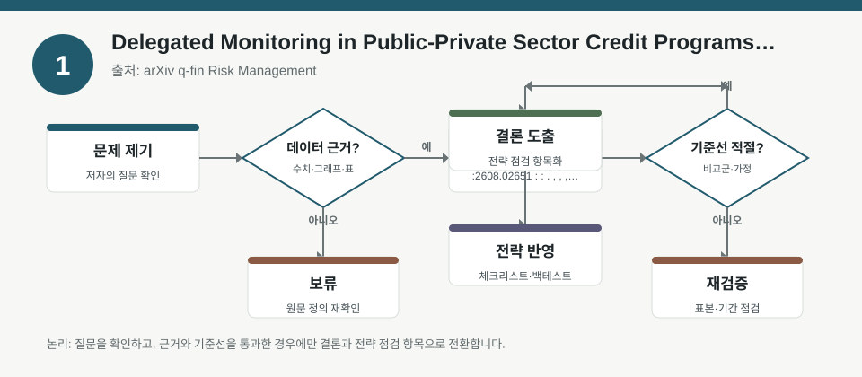
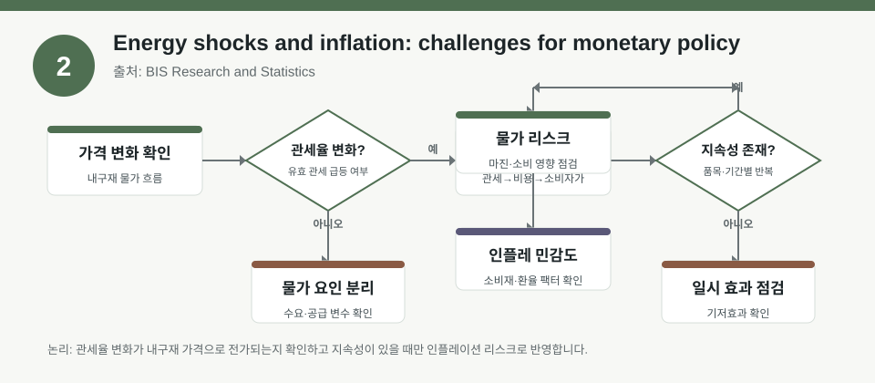
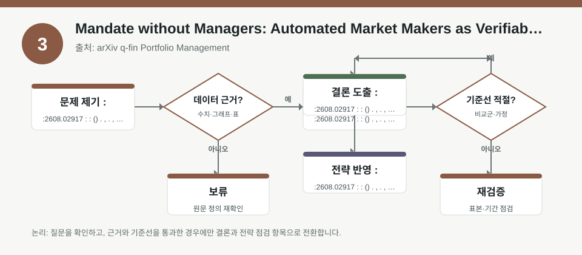

핵심 요약
- 결론: 이번 자료들은 금리·물가·신용배분·포트폴리오 규칙이 주가 방향보다 먼저 리스크 구조를 바꿀 수 있다는 점을 보여줍니다.
- 원칙: 수치가 메타데이터에 없으면 사실로 단정하지 말고, 팩터 노출·가정·백테스트 조건은 원문에서 반드시 재확인해야 합니다.
주목할 자료
| 번호 | 자료 | 출처 | 원문 | 핵심 내용 | 데이터 포인트 | 리스크/한계 |
|---|---|---|---|---|---|---|
| 1 | Delegated Monitoring in Public-Private Sector Credit Programs: Underinvestment, Overinvestment, and the Design of Subsidized Lending | arXiv q-fin Risk Management | 원문 보기 | 공공-민간 협력 신용 프로그램에서 대리 모니터링 구조가 대출 배분을 어떻게 왜곡하는지 분석합니다. | 신용배분의 underinvestment/overinvestment, 중개자 인센티브, 보조금 설계 민감도 | 모형 가정과 제도 설정이 실제 한국 정책금융과 다를 수 있어 외삽 검증이 필요합니다. |
| 2 | Energy shocks and inflation: challenges for monetary policy | BIS Research and Statistics | 원문 보기 | 에너지 충격이 인플레이션과 통화정책 경로에 미치는 1차·2차 효과를 구조적으로 설명합니다. | 에너지-물가 전이, 기대인플레이션, 초기조건, 금리 반응 민감도 | 에너지 가격 충격의 크기와 전이계수는 시점·국가별로 달라 한국 데이터 확인이 필요합니다. |
| 3 | Mandate without Managers: Automated Market Makers as Verifiable Portfolio Products | arXiv q-fin Portfolio Management | 원문 보기 | AMM을 거래소가 아니라 규칙이 내장된 포트폴리오 상품으로 해석하며, 명시적 mandate 집행을 논의합니다. | 포트폴리오 규칙, 자동 리밸런싱, 수수료·슬리피지, 경로의존성 | 온체인 유동성·거래비용·극단구간 성과는 백테스트 조건에 크게 좌우됩니다. |
자료별 상세
1. Delegated Monitoring in Public-Private Sector Credit Programs: Underinvestment, Overinvestment, and the Design of Subsidized Lending

- 핵심: 공공 재원이 민간 중개자를 통해 전달될 때, 대출 총량보다 “누가 어떤 기준으로 배분받는가”가 더 중요한 리스크 변수가 될 수 있습니다.
- 데이터 포인트: 신용배분 왜곡, 중개자 인센티브, 보조금의 설계 민감도는 정책금융 포트폴리오의 팩터 노출로 해석할 수 있습니다.
- 리스크: 원문에서의 제도 가정, 정보 비대칭 구조, 성과 측정 방식이 한국의 정책자금·보증·펀드 구조와 같은지 확인이 필요합니다.
- 투자전략 반영 예시: KOSPI/KOSDAQ에서 정책금융 수혜 업종을 볼 때 업종 방향성보다 신용공급 경로, 조달금리, 규제 의존도, 중소형주 유동성 체크리스트로 전환해 점검할 수 있습니다.
- 실행 예시: 정책금융 관련 기업군을 볼 때 “금리 민감도, 차입 구조, 정부 지원 비중, 연체율 변동”을 항목별로 기록하는 사전 점검표를 만들 수 있습니다.
2. Energy shocks and inflation: challenges for monetary policy

- 핵심: 에너지 충격은 원자재 가격 그 자체보다도 물가 기대, 임금·서비스 가격, 정책 신뢰를 통해 더 넓게 전이될 수 있습니다.
- 데이터 포인트: 에너지-물가 전이, 2차 효과, 초기조건은 한국 주식의 업종별 인플레이션 민감도를 해석하는 핵심 변수입니다.
- 리스크: 에너지 충격의 전이 강도와 중앙은행 반응은 국가별로 다르므로 한국의 CPI, 유가 민감도, 수입물가를 별도 검증해야 합니다.
- 투자전략 반영 예시: KOSPI 업종을 볼 때 정유·화학·운송·소비재처럼 에너지 비용과 마진 압박이 다른 업종을 분리하고, 환율과 금리 민감도까지 함께 점검할 수 있습니다.
- 실행 예시: 월간 체크리스트에 “국제유가, 원/달러, 수입물가, 기대인플레이션, 기준금리 경로”를 넣고 업종별 민감도를 시계열로 기록할 수 있습니다.
3. Mandate without Managers: Automated Market Makers as Verifiable Portfolio Products

- 핵심: AMM은 단순 거래 인프라가 아니라, 사전에 정의한 비중과 규칙을 자동 집행하는 포트폴리오 엔진으로 볼 수 있습니다.
- 데이터 포인트: 자동 리밸런싱, 수수료 구조, 슬리피지, 경로의존성은 백테스트에서 가장 먼저 검증해야 할 성능 변수입니다.
- 리스크: 토큰 가격 경로, 체인별 유동성, 극단적 변동 구간의 손실, 거래비용 반영 방식이 백테스트 결과를 크게 바꿀 수 있습니다.
- 투자전략 반영 예시: 한국 주식 투자자는 ETF·리밸런싱 전략을 볼 때도 “규칙 기반 비중 조정이 변동성 구간에서 어떻게 흔들리는지”를 KOSDAQ 고변동성 환경까지 포함해 점검할 수 있습니다.
- 실행 예시: 과거 데이터로 단순 리밸런싱 전략을 점검할 때 수익률보다 먼저 최대낙폭, 거래비용, 리밸런싱 빈도, 유동성 제약을 기록하는 템플릿을 사용할 수 있습니다.
팩터·리스크·포트폴리오 관점
- 핵심: 세 자료 모두 공통적으로 “수익률 예측”보다 “노출 관리”에 초점을 둡니다.
- 핵심: 신용배분은 정책·규제 팩터, 에너지 충격은 물가·금리·환율 팩터, AMM은 규칙·유동성·비용 팩터로 해석할 수 있습니다.
- 검수: 수치가 메타데이터에 없으므로 전이계수, 손실분포, 백테스트 성과는 원문과 부록에서 재검증해야 합니다.
정리
- 결론: 한국 투자자 관점에서는 업종 선택보다 금리·환율·물가·유동성·규제 노출을 함께 보는 프레임이 더 중요합니다.
- 다음 확인: 원문에서 한국에 적용할 때 필요한 변수 정의, 샘플 기간, 비용 반영, 정책 가정의 차이를 먼저 확인해야 합니다.